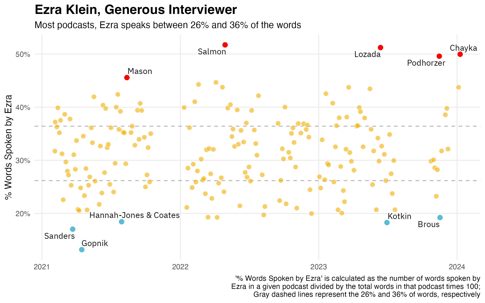
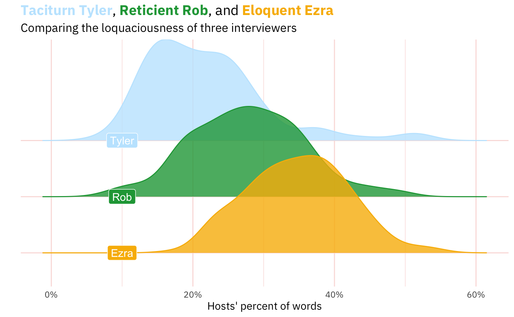
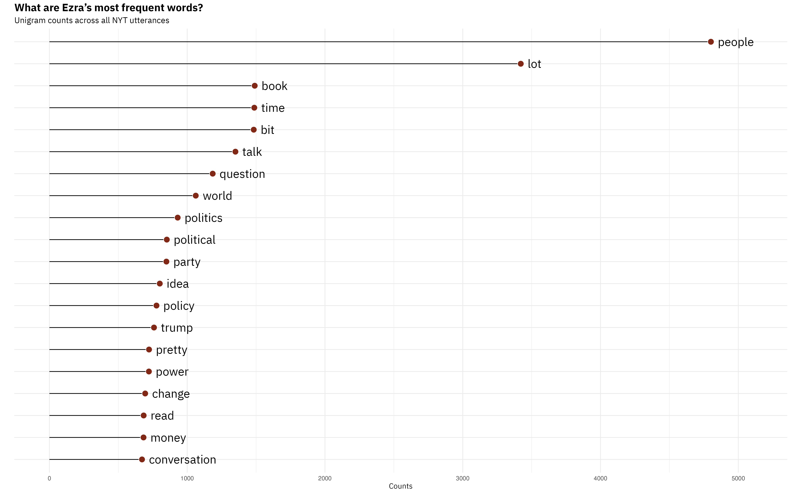
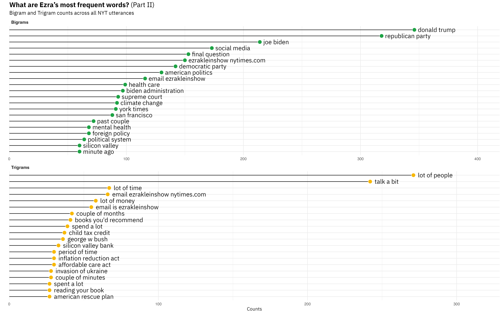
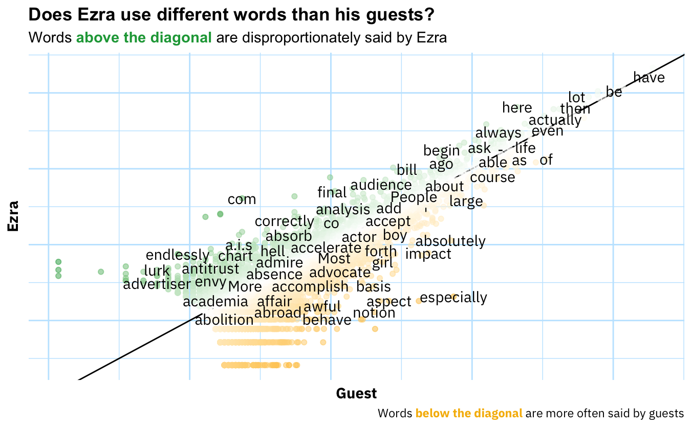
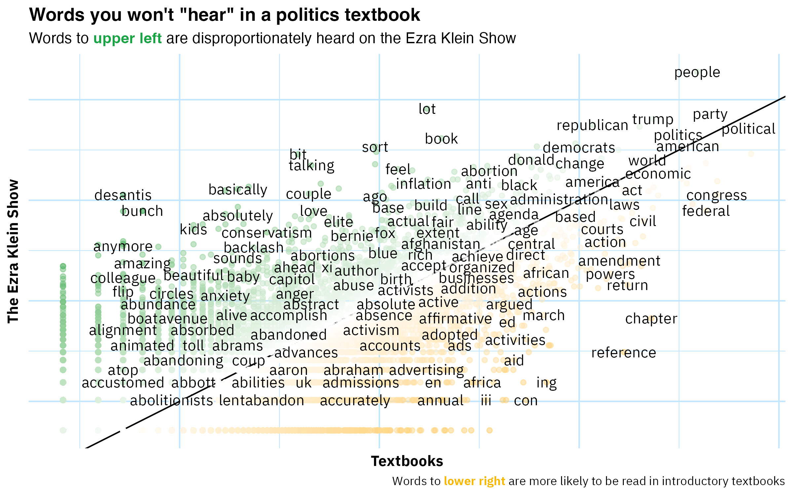
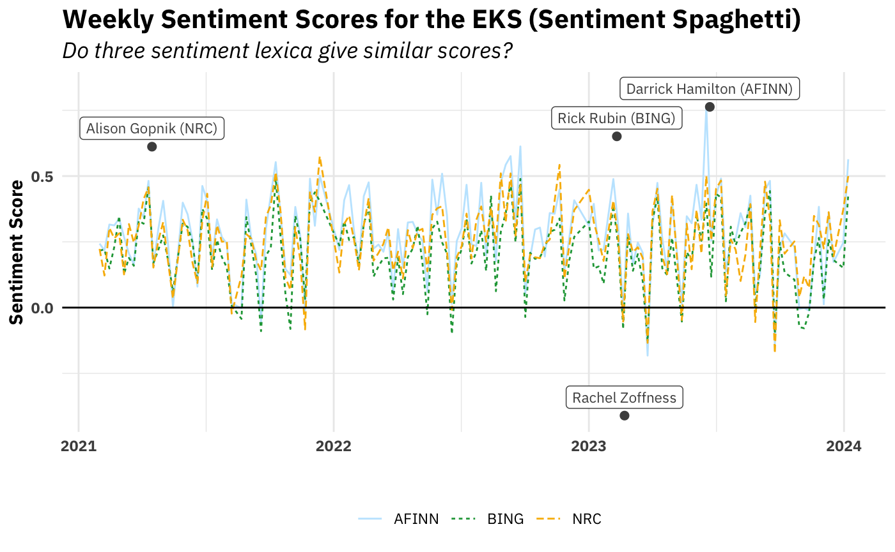
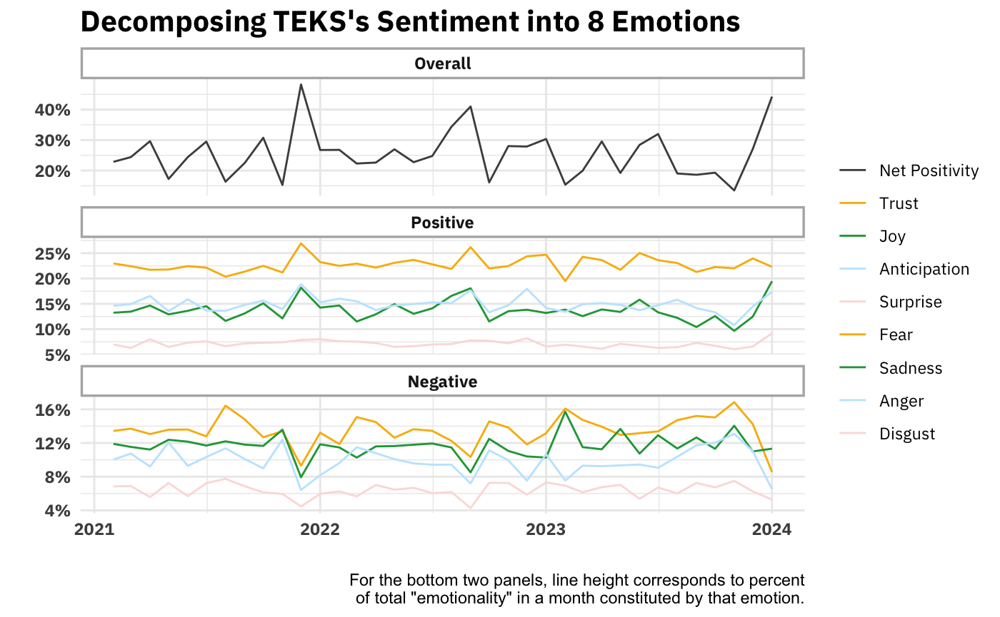
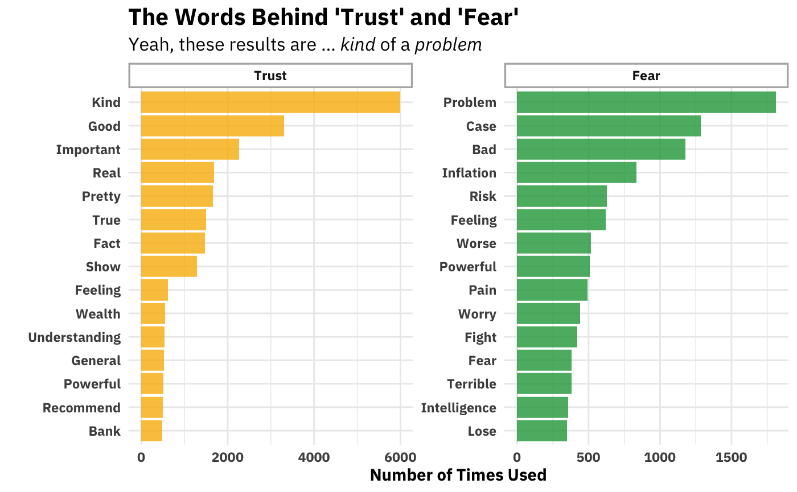

Welcome
For reasons lost to oblivion, I decided to analyze transcripts of Ezra Klein’s podcasts using elementary text analysis. The following was the result.
Interviewing Style
Before even looking at the content of the episodes, before looking at what words are said, sentiments are expressed and topics are covered, we can look at volume of speaking.

We can also compare this distribution of how much Ezra speaks as interviewer to how much other interviewers speak. After all, it’s hard to really feel what the numbers in the graph above mean without comparing them to the relative talkativeness of other interviewers. Below is a comparison of Ezra with two other interviewers, both of whom have had Ezra on as a guest on their programs: Rob Wiblin (80,000 Hours) and Tyler Cowen (Conversations with Tyler).

This is a little more interesting, I think.
My hypothesis before crunching these data was that Tyler was speak the least (and it wouldn’t be close), then Rob, then Ezra. And that turned out to be right.1 After all, Ezra speaks quiet a bit because people tune into Ezra’s show in order to listen to Ezra. Though Tyler’s show does have “Tyler” in the name, he frequently announces that his interviews are the interviews that he wants, not what the listeners might want. And his listener-be-damned approach often results in quick questions and abrupt topic changes. The 80,000 Hours podcast has this intermediate position where Rob often positions himself as a listener might and restates what the speaker said, gives the conventional wisdom against which the interviewee can react, and ask follow-up questions.
Ezra’s Words
Alright, so what does this ingenious interviewer from Irvine actually talk about? Among the ways of answering that question, one is to just look at the words he uses. The simplest way of operationalizing ‘words used’ is to look at “unigrams,” which result from splitting the unstructured text at every whitespace2, making each whitespace-separated unit into a row in a dataframe, and counting how many rows each token (word) appears in that resulting dataframe. Ezra’s result is below.3

But you can also get slighly more sophisticated and look at contiguous words. So, instead of splitting at every whitespace, you split at every second or third whitespace. The nice thing about that is you start to see phrases, turns of speech. For example, if you were curious why “people,” “lot,” and” bit” appear in the unigrams, the bottom-most panel will give you your answer.

Among the bigrams and trigrams, an Ezra Klein Show fan will also be pleased to see Ezra’s pat phrases for parts of his podcast: “final question”, “books you’d recommend,” and “email [is] ezrakleinshow@nytimes.com.” I’m not sure if seeing these phrases is interesting, but they are nice proofs of concept for the method. You also see that the bigrams are dominated by pairs of words that, yes, do have a space between them, but they are lexically one thing. I’d argue that “past couple” and “minute ago” are only instances of more-or-less independent words coming together.
Now let’s try something potentially more interesting. We can also look at how he uses words differentially. Why would that be useful? Well, just looking at the words he uses might tell us that he’s a guy with a show that covers topics X, Y, and Z that use the words associated with those topics.4 One way we can “control for” topic is to contrast Ezra’s words with those of his guest. Abstractly, the idea is that if person A and B are talking about subject S, the words that differentiate A and B are not going to be those that generically describe subject S. Rather, they will be the words idiosyncratically associated with each interlocutor.

This surprised me. Sure, one would expect most words to be along the diagonal line which indicates that the word is used in equal proportions by both Ezra and his guests, but I really expected this to show more unique usages in the off-diagonal space.
We can also compare the words of the Ezra Klein Show to the words used in introductory political science textbooks. The idea of such an analysis would be to ask, “When Ezra talks politics, which topics (proxied by words) does he dedicate space to than an introduction to politics? Which topics does he spend less time one?” From these results one could hope to find out something about which aspects of politics Ezra finds interesting and important, and which less so. Unfortunately, I carried out the analysis and the result is below:

I call this ‘analysis’ “unfortunate” because it doesn’t generate any insight. I mean, what are you really supposed to get from this? One takeaway for the practitioner of text analysis is that you might have to do a decent amount of preprocessing before you can make impactful deliverables. Two useful ways you can preprocess raw text here are lemmatizing (or stemming) and using a parts-of-speech tagger to extract only nouns. What both of those steps share is the winnowing out (or consolidating) of noise/chaff. In a subsequent post I’ll try these feature-space-shrinking techniques out.
Sentiment Analysis
I think most listeners of The Ezra Klein Show have noticed that Ezra is unique among interviewers in his emotionality. Not emotionality in a histrionic sense, but more like “general emotional urgency.”5 So, in theory it would be interesting to use text analysis to get at this aspect of The Ezra Klein Show that sets the show out from others and uniquely characterizes Ezra as an interviewer. My hunch, however, is that the basic methods of sentiment analysis are not up to the task. In a forthcoming post I’ll dive deeper into why (and what methods would yield more insightful results), but for now let’s very briefly look at the results of these dictionary-based methods.
As Tolstoy famously noted, if there are bad ways of doing something, they’ll bad in different ways. Let’s put that to the test with sentiment dictionaries. There are various ‘sentiment lexicons’ that will limpet onto your text to give you the raw materials for calculating sentiment scores at whatever level aggregation you choose. Here I’ve chosen three supposedly general-purpose dictionaries and calculated the sentiment score for each episode of TEKS. As you can see in the table below, their episode-level correlations are very high.
| BING | AFINN | NRC | |
|---|---|---|---|
| BING | 1 | ||
| AFINN | 0.91 | 1 | |
| NRC | 0.83 | 0.85 | 1 |
Nice. Convergent validity✅. And now I don’t have to read Anna Karenina.
If we want to be a little more aesthetic (💅🏻), we can look at sentiment scores with a plot over time.

Sure enough, it looks like the three dictionaries’ scores also (unsurprisingly) strongly correlate at the week level as well. We also see that, by and large, the overall sentiment of episodes is positive.
I’ve also highlighted which episode each dictionary picks out as the most extreme, both positive and negative While they disagreed on most positive (hence the three positive episodes), there was three-way agreement on the most negative: his interview Rachel Zoffness’s author of The Pain Management Workbook. So it’s hardly surprising that these out-of-the-box algorithms would rank it as the most negative. It is disappointing, though. I went back and listened to the episode after finding out it was universally declared the most negative and … isn’t actually that negative. The post October 7th episodes on the situation in Israel and Gaza are much much more negative. Lesson: convergent validity does not imply construct validity.
Right, so the simple valence continuum (positive/negative) was mostly a flop. How about using a sentiment dictionary that maps words to eight different emotions and seeing which emotions predominate in The Ezra Klein Show? Eight is four times bigger than two, so that sounds promising. Below is what that looks like over time.

Ok, this could be interesting. We see that trust is consistently the great contributor to the show’s positivity and fear to its negativity. Ideally we’d compare these numbers to those of another show. But one way we can kick the tires on this analysis is by seeing what words drive trust and fear’s respective high-rankings.

I’m just … not sure about this. You see why dictionary-based isn’t a particularly valid way of inferring emotion from word usage. Just looking at the Trust side of things, “kind” appears in collocations like “kind of bad,” (which would have the valence wrong) and, “kind of [entity],” which is not usually valenced. It’s certainly not always (probably not even usually) an indicator of trust. You can go down the list and find similar (and other!) problems with every other word. I’m honestly not sure how people take this seriously.
Concluding Thoughts
I’m not sure if I would have predicted this beforehand, but by far the most interesting plots here are the two looking at simple volume of speaking. Why is this? I think it has to be because it’s the only case where the method (counting, in this case) adequately represents the thing it purports to measure. I suppose word counts do that as well, but there’s no spice when there’s no implicit contrast (as is the case simple word counts) and then when there is contrast (in those graphs that plot proportions against each other), nothing pops out. Ex ante it might have be unknowable that was going to happen.
Acknowledgements and Arigatos
Andrew Heiss’s data visualization course inspired (and enabled) me to have nice(ish) looking text on my graphs. If you know some ggplot2 and are looking to become high-intermediate in your ggplot2 skills, I highly recommend his course.
The vast majority of the analyses you see here I learned back in the day from Julia Silge and Dave Robinson’s Tidy Text Mining with R book. I recommend it to anyone as a jumping off point for doing text analysis. Most of the analyses here don’t go (too far) beyond what you can do with the tools you pick up in that book
Footnotes
I sadly didn’t preregister these hypotheses, so you have to reason to believe me.↩︎
You can also split on other delimiters as well. Various non-alphanumeric characters would do↩︎
For the following two graphs, I recommend right-clicking them and opening in a new window. The proportions are terrible on this page. My sincerest aesthetic apologies.↩︎
If we wanted a topic analysis we’d head down to the last section of this page!↩︎
I’m not sure I like that term (and I don’t think it conveys anything to someone unfamiliar with the podcast), but I’ll leave it there as a placeholder for now.↩︎